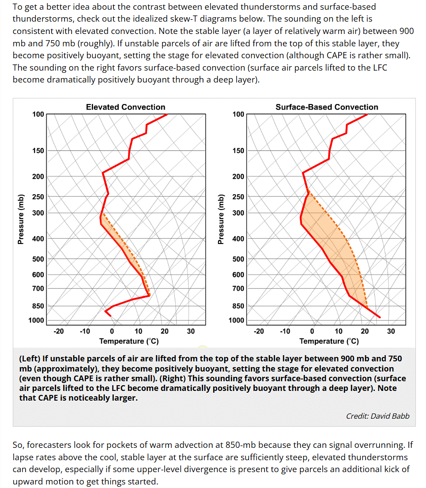

ZHU Training Page archive · Skew-T Comparison (Elevated vs Surface-Based Convection) · Source: https://www.weather.gov/source/zhu/ZHU_Training_Page/thunderstorm_stuff/elevated_convection/skew_T_Comparison.html · Captured 2026-08-19 06:00 UTC
PENN STATE UNIVERSITY - DEPT OF METEOROLOGY

|